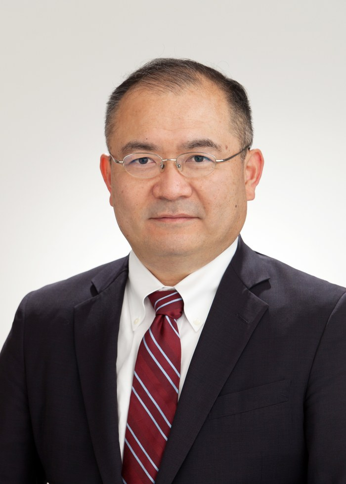

人と雰囲気。研究室のメンバーをご紹介します。

早稲田大学 持続的環境エネルギー社会共創研究機構 機構長
| 1968年5月26日生まれ | |
| 1987年3月 | 静岡県立浜松北高等学校卒業 |
| 1992年3月 | 早稲田大学理工学部機械工学科卒業 |
| 1994年3月 | 早稲田大学大学院理工学研究科修士課程修了 |
| 1998年3月 | 工学博士（早稲田大学） |
| 1999年1月 | 工業技術院研究員（科学技術特別研究員として） |
| 2005年4月 | アメリカイリノイ大学客員研究員 |
| 2008年4月 | 早稲田大学教授 |
| 2011年2月 | フィリピン大学栄誉教授 |
| 2014年1月 | インドネシア大学客員教授 |
| 2014年10月 | 早稲田大学基幹理工学部教務主任 |
| 2017年4月 | 重点領域研究機構 熱エネルギー変換工学・数学融合研究所 所長 |
| 2018年9月 | オープンイノベーション戦略研究機構 数理エネルギー変換工学研究所 所長 |
| 2022年4月 | 早稲田大学 持続的環境エネルギー社会共創研究機構 機構長 |
| 2022年 | 令和4年度 科学技術分野の文部科学大臣表彰 科学技術賞 |
| 2022年 | 2021年度早稲田リサーチアワード受賞（大型研究プロジェクト推進） |
| 2021年 | 2020年度早稲田リサーチアワード受賞（大型研究プロジェクト推進） |
| 2020年 | 2019年度早稲田リサーチアワード受賞（大型研究プロジェクト推進） |
| 2012年 | 日本機械学会賞（技術） |
| 2011年 | フィリピンERDT最優秀講演賞 |
| 2010年 | 韓国SAREK最優秀論文賞 |
| 2010年 | 日本冷凍空調学会最優秀論文賞 |
| 2002年 | 日本機械学会研究奨励賞 |
| 名誉教授 | 河合 素直 |
| 准教授 | Niccolo Giannetti |
| 講師 | 金 武重／キム・チョルファン／IBRAHIM Nasiru Ishaq／田中 千歳 |
| 助手 | ドンディニ・ダミアノ |
| 博士課程 | 安喰 春華／前田 健人 |
| 修士2年 | Yang Yuelin／丸野 大智／齋藤 翼／篠原 寛太／張 昊朔／Lin Chienchieh |
| 修士1年 | Heng Zhangyan／Jourdan Gabriel Alexander／小林 令穏／白水 希理／長井 佑樹／横尾 心温／Zhao Jiannan／Firdaus Nazuwan Hafiz |
| 学部4年 | 丸谷 心優／加悦 成晃／仮屋 太陽／惟村 詠甫／齋藤 千佳／渋谷 遥斗／瀧川 颯斗 |
| 学部3年 | （9月配属予定） |
| 研究員 | 香川 澄／丹羽英治／宮岡 洋一／石橋直彦／鄭 宗秀／Richard Jayson Varela／John Carlo Solomon Garcia／松田 憲兒／西村 邦幸／平良 繁治／粥川 洋平／東條 健司／井汲 米造／井上 修行／森 弘治／高橋 幸伸／中村 啓夫／高田 浩史／李 明雨 |
2026年4月更新